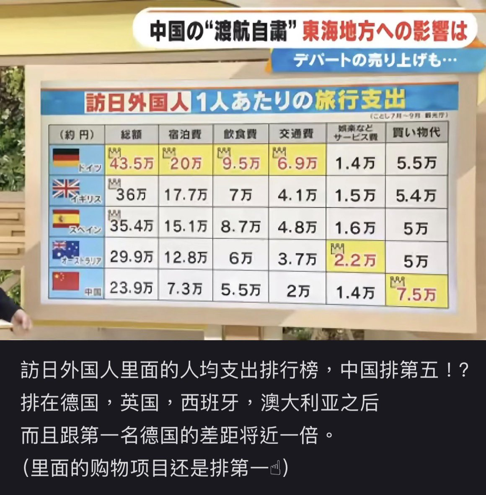

Minokakay
@Minokakay
实际上造成这个统计结果的原因是欧美人几年甚至一辈子才会来一次，一次可能就停留半个月甚至更久。中国倒是很多人每年都去，但每次只停留6-7天，因为中国人没什么假期。
毕竟中国人只是口头反日，且会口头反日的那帮基本盘本身也没有去日本的打算，平时出个省钱包都得掏空，高知/高净值人群还是十分喜爱日本的，毕竟谁不喜欢一个文字部分共通，风光秀丽，高素质，干净又发达的东亚国家。
日本国内很多人说没有中国游客日本旅游业损失也不大，确实是非观光业从业者能说出来的话。
